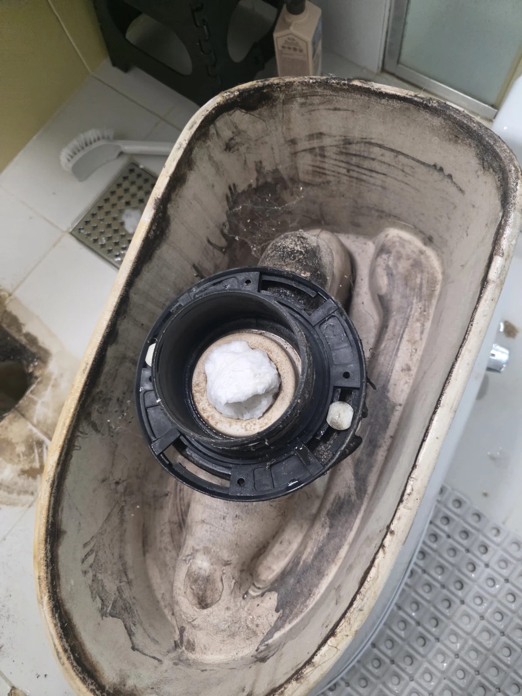
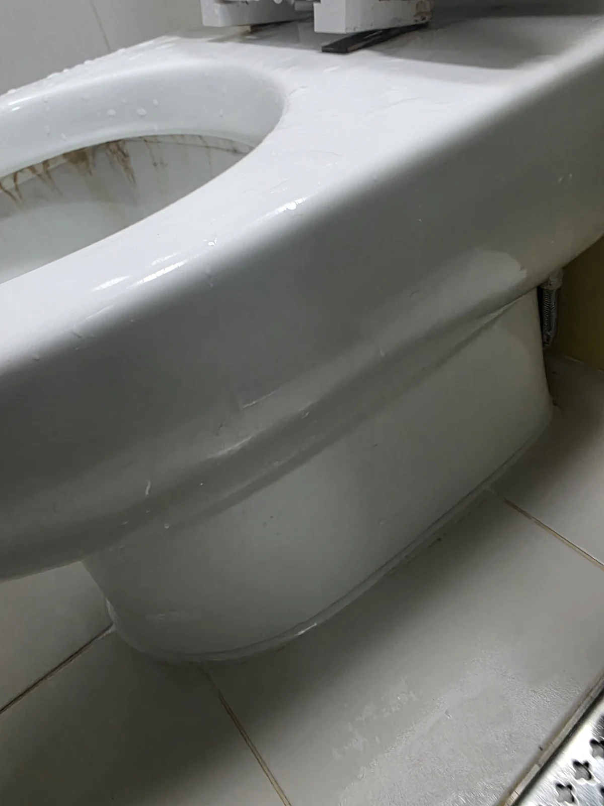

관악구 변기막힘 현장 도착과 진단
변기가 막혔을 때 첫 작업으로 해결되지 않으면 무엇을 확인할까요? 관악구에서 변기 물이 내려가지 않는다는 연락을 받고 방문했습니다. 고객님께서는 휴지 외에는 넣은 것이 없다고 말씀하셨습니다. 처음에는 관통기로 배수 통로를 확보할 수 있을 것으로 생각했지만, 실제 작업에서는 막힌 부분이 밀리지 않았습니다. 변기막힘은 넣은 물질의 종류뿐 아니라 내부에 남아 있는 양과 뭉친 상태에 따라 작업 방법이 달라질 수 있습니다.
관통 작업에 이어 석션도 시도했지만 흡입으로 해결되지 않았습니다. 이때 같은 조치를 계속 반복하기보다는 현재 접근 방식으로 제거가 가능한지 다시 판단해야 했습니다. 이번 변기막힘 현장은 처음 예상과 실제 장비 반응이 달랐고, 그 차이가 다음 작업을 결정하는 중요한 근거가 되었습니다. 처음부터 원인을 확정하지 않고 작업 반응을 살피며 접근했습니다.
신라건축설비은 현장에서 확인한 내용과 앞으로 필요한 작업을 고객님께 이해하기 쉽게 설명하는 것을 중요하게 생각합니다. 관악구 변기막힘 사례에서도 관통과 석션으로 해결되지 않은 상태를 설명하고, 변기를 탈거해 내부를 확인하는 방향을 충분히 협의했습니다. 하수구막힘으로 문의하신 경우에도 실제 문제가 있는 기구와 위치를 구분해 필요한 작업부터 안내합니다.
1단계: 초기 작업 결과와 탈거 후 원인 확인
고객님과 탈거를 협의한 뒤 변기를 분리해 뒤집어 살펴보았습니다. 출구 쪽에는 휴지가 공처럼 단단하게 뭉쳐 있었습니다. 휴지만 넣었다는 설명과 달리 다른 물건이 발견된 것이 아니라, 휴지 자체가 압축된 덩어리로 통로를 막고 있었던 것입니다. 변기막힘 원인을 직접 확인하면서 앞선 관통과 석션 작업으로 쉽게 제거되지 않았던 상황을 이해할 수 있었습니다.
한 번에 많은 휴지를 내려보낸 뒤 막힌 상태에서 휴지가 계속 추가되어 내부에서 더 단단하게 뭉친 것으로 추정했습니다. 다만 휴지가 쌓인 모든 과정을 직접 본 것은 아니므로, 확인한 사실은 단단한 휴지 덩어리가 있었다는 점입니다. 현장에서는 실제로 발견한 물질과 그 물질이 만들어진 과정에 대한 판단을 구분해 설명하는 것이 중요합니다.
탈거는 변기를 분리하고 다시 설치하는 과정까지 필요한 작업입니다. 따라서 변기막힘이 있다고 곧바로 탈거부터 정하는 방식은 지양합니다. 이번에는 관통과 석션으로 해결되지 않았다는 근거가 있었고 고객님과 협의한 뒤 진행했습니다. 필요한 조치의 이유와 범위를 먼저 안내하는 것이 신라건축설비이 생각하는 합리적인 작업이며, 불필요한 공정을 줄이기 위한 판단 기준이기도 합니다.

2단계: 막힘 처리와 변기 재설치
단단하게 뭉친 휴지를 확인한 뒤에는 에어건으로 제거 작업을 진행했습니다. 앞선 관통기는 막힌 부분을 밀어 통로를 확보하려는 시도였고, 석션은 흡입으로 제거하려는 시도였습니다. 두 방법으로 해결되지 않은 변기막힘 상태를 탈거 후 직접 확인했으므로, 확인된 덩어리에 대응하는 후속 작업으로 이어간 것입니다.
장비가 많다는 사실만으로 작업의 전문성이 설명되지는 않습니다. 어떤 반응이 있었고 다음 방법을 왜 선택했는지가 함께 보여야 합니다. 신라건축설비의 숙련된 기사들은 현장 경험을 바탕으로 작업 순서를 판단하고, 고객님이 진행 상황을 이해할 수 있도록 소통하는 시공을 지향합니다. 이번에도 관통, 석션, 탈거 확인, 에어건 작업이라는 흐름이 실제 현장 상태에 맞춰 이어졌습니다.
관악구 변기막힘 작업에서는 막힌 부분을 해소한 뒤 정상 통수를 확인하고 변기를 다시 설치했습니다. 탈거 과정으로 끝내는 것이 아니라 다시 사용할 수 있는 상태로 복구하는 것까지 작업 범위에 포함됩니다. 변기 하부는 백시멘트로 깔끔하게 마감했습니다. 눈에 보이는 마감과 실제 배수 기능을 함께 살피는 것이 설치를 동반한 막힘 작업의 중요한 마무리입니다.

작업 결과와 재발 방지
작업 후에는 물이 정상적으로 내려가는 것을 확인했고, 누수 없이 마무리했습니다. 휴지 덩어리가 보이지 않게 되었다는 사실만으로 변기막힘 해결을 판단하지 않고, 실제 물내림과 재설치 상태를 확인한 것입니다. 고객님께서 다시 변기를 사용하실 때 불편이 남지 않도록 기능 확인과 하부 마감을 함께 챙겼습니다.
변기가 막혔을 때에는 휴지를 더 넣거나 물을 반복해서 내리지 않는 것이 좋습니다. 이번처럼 이미 통로에 남은 휴지가 단단하게 뭉친 상태라면 휴지를 추가하는 행동이 상황을 더 복잡하게 만들 수 있습니다. 평소에도 많은 양을 한 번에 넣지 말고, 배수가 평소보다 느리다면 사용을 멈추고 상태를 확인해주세요. 휴지 외에 물티슈나 생활용품이 들어갔다면 상담할 때 함께 알려주시는 것이 좋습니다.
관악구에서 변기 뚫는 업체를 찾으신다면 첫 작업으로 해결되지 않을 때 어떤 근거로 다음 작업을 정하는지 살펴보세요. 신라건축설비은 변기막힘 현장의 원인 확인, 충분한 작업 설명, 숙련된 시공과 깔끔한 복구를 중요하게 생각합니다. 막힘 제거부터 정상 물내림과 누수 확인까지 연결해 고객님이 작업 내용을 이해할 수 있도록 안내하겠습니다.
최종 조치: 관통과 석션으로 해결되지 않은 변기막힘을 탈거 후 확인하고, 압축된 휴지를 에어건으로 처리했습니다. 재설치와 백시멘트 마감 후 정상 통수와 누수 없는 상태를 확인했습니다.
현장 방문 전 확인하는 비용과 작업 범위
신라건축설비는 현장 증상과 배관 구조를 확인한 뒤 필요한 작업과 예상 비용을 안내합니다. 단순 관통으로 해결되는지, 배관내시경·석션·고압세척 또는 변기 탈거가 필요한지는 현장 상태에 따라 달라집니다. 출장비와 야간 작업비, 추가 장비 비용이 발생할 수 있는 경우 작업 전에 먼저 설명하고 동의를 받은 범위에서 진행합니다.
업체를 선택할 때 확인할 사항
무조건적인 ‘0원’ 표현보다 실제 작업 범위, 추가 비용 조건, 사용 장비와 사후 대응 기준을 확인하는 것이 중요합니다. 해결되지 않았을 때의 비용 기준과 작업 후 동일 증상 발생 시 점검 범위를 사전에 문의해두면 불필요한 분쟁을 줄일 수 있습니다.
관악구 변기막힘 자주 묻는 질문
변기막힘은 왜 반복되나요?
관악구 현장처럼 변기 물이 내려가지 않았습니다. 증상은 원인이 현장마다 다를 수 있습니다. 변기 내부 이물질뿐 아니라 하부 오수관 막힘이나 배관 상태 때문에 반복될 수 있습니다. 같은 변기막힘이 재발하면 막힌 위치와 원인을 다시 확인하는 것이 중요합니다.
변기 물이 안 내려가거나 역류하면 변기뚫는업체를 불러야 하나요?
물이 천천히 내려가거나 수위가 차오르고 변기역류가 반복되면 단순 뚫어뻥보다 전문 장비 점검이 필요한 경우가 있습니다. 현장에서는 증상과 배관 구조를 먼저 확인합니다.
변기 이물질 막힘은 변기를 탈거해야 하나요?
물티슈·청소포·플라스틱·음식물처럼 변기 트랩에 걸린 이물질은 위치에 따라 변기 탈거가 필요할 수 있습니다. 무조건 탈거하지 않고 먼저 막힘 위치를 판단합니다.
변기뚫는업체는 어떤 장비로 작업하나요?
현장 상태에 따라 석션, 에어건, 배관내시경, 변기 탈거 등을 사용합니다. 하부 오수관 문제라면 변기만 뚫는 작업보다 배관 구간 확인이 중요합니다.
변기막힘 비용은 어떻게 정해지나요?
단순 관통인지, 이물질 제거와 변기 탈거가 필요한지, 오수관이나 공용배관 작업이 필요한지에 따라 달라집니다. 추가 장비나 작업이 필요하면 진행 전에 범위와 비용을 안내합니다.
변기에서 냄새가 나거나 물이 자주 차오르는 것도 막힘과 관련 있나요?
악취나 수위 이상이 항상 막힘 때문인 것은 아니지만 배수 불량, 오수관 상태, 연결부 문제와 함께 나타날 수 있습니다. 반복되면 현장 점검으로 원인을 구분해야 합니다.
변기막힘 서울·경기 출동지역
신라건축설비는 관악구 현장을 포함해 서울 25개 구와 경기도 31개 시·군의 배관 문제를 상담합니다. 현장 거리와 기사 배정 상황에 따라 출동 가능 여부를 먼저 안내드립니다.
서울 전 지역
강남구 · 강동구 · 강북구 · 강서구 · 관악구 · 광진구 · 구로구 · 금천구 · 노원구 · 도봉구 · 동대문구 · 동작구 · 마포구 · 서대문구 · 서초구 · 성동구 · 성북구 · 송파구 · 양천구 · 영등포구 · 용산구 · 은평구 · 종로구 · 중구 · 중랑구
경기도 주요 출동지역
수원시 · 용인시 · 고양시 · 화성시 · 성남시 · 부천시 · 남양주시 · 안산시 · 평택시 · 안양시 · 시흥시 · 파주시 · 김포시 · 의정부시 · 광주시 · 하남시 · 광명시 · 군포시 · 양주시 · 오산시 · 이천시 · 안성시 · 구리시 · 의왕시 · 포천시 · 양평군 · 여주시 · 동두천시 · 과천시 · 가평군 · 연천군